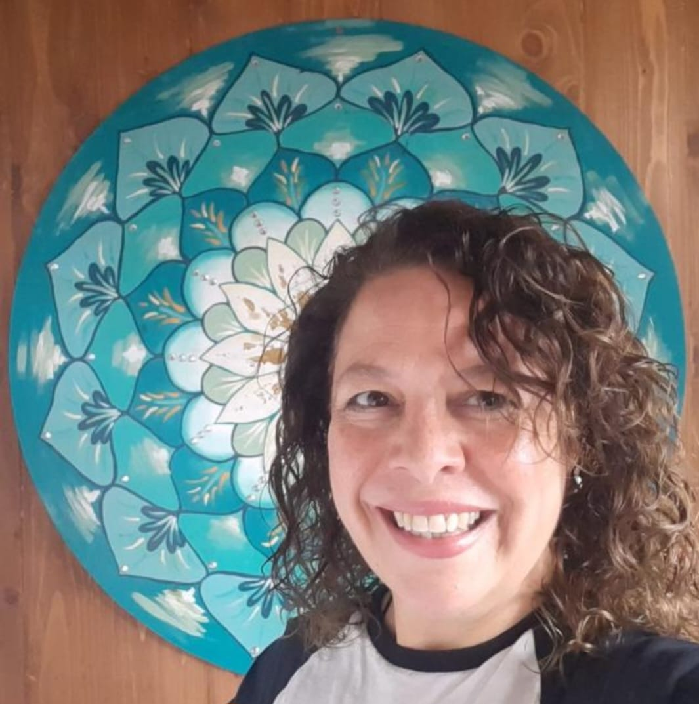

Fundamentación
Bienvenidos a este espacio de formación sincrónica. El presente programa propone ampliar la mirada clínica tradicional, incorporando herramientas que permitan comprender al paciente como un ser integral.
A lo largo de estos 9 encuentros, exploraremos dimensiones que exceden lo estrictamente sintomático o funcional, involucrando aspectos emocionales, sistémicos y existenciales que son claves en el abordaje interdisciplinario de la discapacidad.
Cronograma de Encuentros 2026
El síntoma y la discapacidad como lenguaje del sistema familiar.
Coherencia cardíaca y el pensamiento como frecuencia energética.
Entrelazamiento cuántico y resonancia biológica en el equipo.
Neuroplasticidad y el entorno emocional como factor de cambio.
Cerebro triuno e integración del desarrollo infantil.
El sentido biológico de los síntomas y programas de la naturaleza.
Memoria somática y la teoría polivagal en la clínica.
Dimensión transgeneracional y lealtades invisibles.
Percepción energética y síntesis del recorrido formativo.

Lic. Miriam Borda
Psicóloga clínica con 34 años de trayectoria. Directora de la formación y especialista en clínica de la discapacidad con enfoque holístico integrativo.
1. La enfermedad y discapacidad como camino de sentido
Te invitamos a sumarte a la apertura de nuestra formación.
Unirse a la Clase en VivoIntroducción
Iniciamos el recorrido comprendiendo al paciente como una unidad total: cuerpo, mente, emoción y espíritu, inserto en un sistema familiar y social.
Objetivos
- Diferenciar entre déficit, limitación y sentido biológico.
- Introducir la mirada holística en el equipo interdisciplinario.
Contenidos
El síntoma como lenguaje • El niño como portador de información sistémica • La familia como campo de influencia.
2. Conciencia, intención y coherencia
Exploraremos el rol del terapeuta como observador consciente.
Unirse a la Clase en VivoIntroducción
Analizaremos cómo la presencia y la coherencia del profesional actúan como factores de sanación en el encuadre clínico.
Objetivos
- Incorporar la coherencia cardíaca en la práctica diaria.
- Comprender el impacto de la intención en los resultados terapéuticos.
Contenidos
Coherencia cardíaca • El pensamiento como frecuencia • El "Estar" vs el "Ser" en la consulta.
3. El Campo Cuántico y la sanación
La ciencia de la interdependencia aplicada a la clínica.
Unirse a la Clase en VivoIntroducción
Profundizaremos en la interconexión profunda entre los seres vivos y cómo la física cuántica explica la resonancia en el equipo de salud.
Objetivos
- Entender el entrelazamiento cuántico en la relación paciente-familia.
- Reconocer el poder del observador en la evolución del niño.
Contenidos
Punto cero y vacío • Resonancia biológica • Interdependencia en el tratamiento interdisciplinario.
4. Herramientas de sanación y cambio de paradigma
Rompiendo diagnósticos estancos a través de la plasticidad.
Unirse a la Clase en VivoIntroducción
Estudiaremos cómo las creencias del entorno condicionan la biología y cómo el profesional puede facilitar un nuevo campo de posibilidades.
Objetivos
- Aplicar conceptos de neuroplasticidad en el abordaje de la discapacidad.
- Superar el determinismo genético a través del entorno emocional.
Contenidos
Ciclo pensamiento-sentimiento • El pasado genético vs epigenética • Meditación y visualización clínica.
5. Cerebro y Biología
La base biológica de la respuesta al estrés.
Unirse a la Clase en VivoIntroducción
Comprenderemos la estructura cerebral no solo como anatomía, sino como un sistema de respuesta biológica al trauma y al entorno.
Objetivos
- Identificar las funciones del cerebro triuno en pacientes con discapacidad.
- Implementar estrategias de corregulación emocional.
Contenidos
Cerebro triuno • Integración vertical y horizontal • El cerebro del niño y el apego seguro.
6. Las 5 Leyes Biológicas
El sentido biológico de los programas de la naturaleza.
Unirse a la Clase en VivoIntroducción
Introducción a los descubrimientos del Dr. Hamer sobre las leyes que rigen la salud y la enfermedad.
Objetivos
- Realizar una lectura biológica de cuadros comunes en discapacidad.
- Comprender las fases de la enfermedad para acompañar mejor los procesos.
Contenidos
El conflicto biológico (DHS) • Las dos fases de la enfermedad • El rol de los microbios.
7. Emoción y Cuerpo
La huella del trauma en la biología.
Unirse a la Clase en VivoIntroducción
El cuerpo no miente. Analizaremos cómo las experiencias quedan registradas somáticamente y cómo liberarlas.
Objetivos
- Aplicar técnicas de conciencia corporal en la sesión.
- Entender la teoría polivagal aplicada al sistema nervioso autónomo.
Contenidos
Memoria somática • Teoría polivagal • Ejercicios de descarga y liberación emocional.
8. Constelaciones individuales y matrices relacionales
La mirada transgeneracional en la discapacidad.
Unirse a la Clase en VivoIntroducción
Exploraremos las lealtades invisibles y cómo el síntoma del niño a menudo es una voz de su sistema familiar.
Objetivos
- Identificar dinámicas transgeneracionales en la consulta clínica.
- Utilizar herramientas de constelaciones en formato individual.
Contenidos
Lealtades invisibles • El síntoma como expresión sistémica • Respeto al ritmo familiar.
9. Integración energética y cierre
Síntesis del recorrido y herramientas finales.
Unirse a la Clase en VivoIntroducción
Llegamos al final integrando todos los cuerpos del ser y reconociendo el campo energético como una herramienta clínica ética.
Objetivos
- Integrar los conocimientos adquiridos en un cierre pedagógico.
- Practicar la percepción energética consciente.
Contenidos
Radiestesia integral básica • Integración de los cuerpos del ser • Cierre formativo.